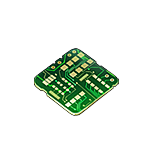

Получено: файл; исходный URL. Изображение получено с зеркала без перекодирования; идентичность оригиналу и авторство не проверены. Страница: источник.
Микросхема
браузерные Зомби Ферма и Зомби Мания; платформу и редакцию уточнить- Тип
- Материал
- Покупка
- нет данных
- Продажа
- нет данных
- Как получить
- нет данных
- Применение
- нет данных
- Особенности
- нет данных
- Версия и дата
- браузерные Зомби Ферма и Зомби Мания; платформу и редакцию уточнить
Данные по источнику · браузерная Зомби Ферма / Зомби Мания, платформа не уточнена · дата URL — дата публикации, редакция могла обновляться позже
Предварительно: Прочитана отдельная статья. Иллюстрации и ссылки ведут к ЗомбиСити; независимость не доказана. Исторические параметры требуют сверки редакции.. Требуется сверка.
- Цена
- покупка 2 зомбакса; продажа 1000 монет
- Получение
- получить пересланную лампочку, которая превращается в микросхему; чемоданы туристов, Богатырский и Скромный презенты
- Применение
- Часовая башня, батискаф, голубая ракета, школьный автобус, мобильный телефон, шаттл и другие постройки


Данные по источнику · браузерная Зомби Ферма / Зомби Мания; платформа требует проверки · дата URL не гарантирует дату редакции
Предварительно: Индивидуальная страница прочитана автоматически, подписи значков могут содержать ошибки; даты редакции и независимость от ЗомбиСити не установлены.. Требуется сверка.
- Основной блок страницы и подписи изображений
- Материал [иллюстрация: Микросхема] Микросхема Цена покупки: 2 [иллюстрация: Зомбаксы] Цена продажи: 1000 [иллюстрация: Монеты] Продать или купить Микросхемы можно в Обменке игры Зомби Ферма Этот необычный материал появился в игре Зомби Ферма вместе с Президентской коллекцией, за которую можно получить материал Лампочка. Именно эта лампочка при пересылке становится Микросхемой, и наоборот. Микросхему можно получить, если вам перешлют Лампочку: Лампочка [иллюстрация: Лампочка] [иллюстрация: Стрелка] Микросхема [иллюстрация: Микросхема] Микросхема выпадает из Чемоданов туристов и ценностей: Чемодан [иллюстрация: Чемодан туриста] Богатырский презент [иллюстрация: Богатырский презент] Скромный презент [иллюстрация: Скромный презент] Участвует в строительстве построек: Часовая башня [иллюстрация: Часовая башня] Батискаф [иллюстрация: Батискаф] Голубая ракета [иллюстрация: Голубая ракета] Школьный автобус [иллюстрация: Школьный автобус] Мобильный телефон [иллюстрация: Мобильный телефон] Шаттл [иллюстрация: Шаттл] Шаттл Tic Tac [иллюстрация: Шаттл Tic Tac] Большой леденец [иллюстрация: Большой леденец] Талисман [иллюстрация: Талисман] Великий Упс [иллюстрация: Великий Упс]
Связанные сущности
нет проверенных связей — требуется сверка.